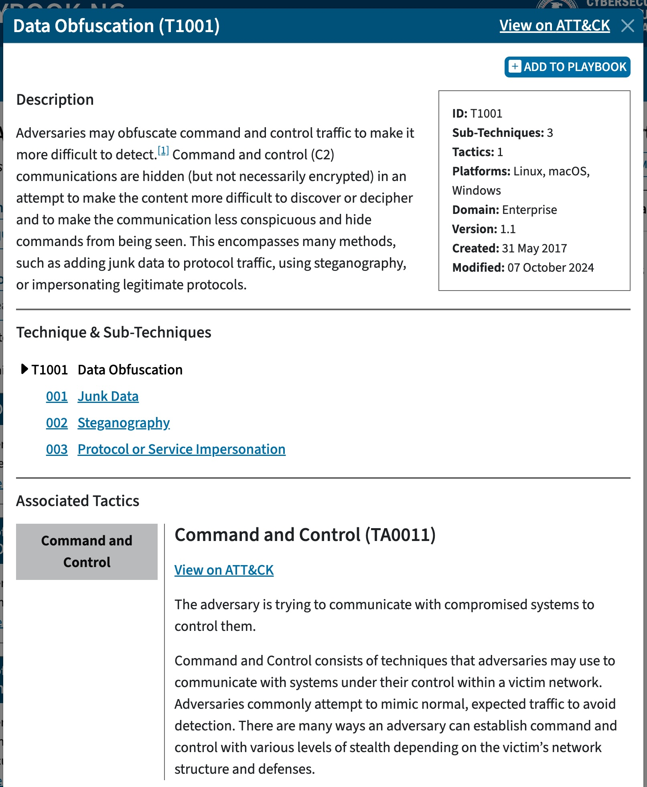
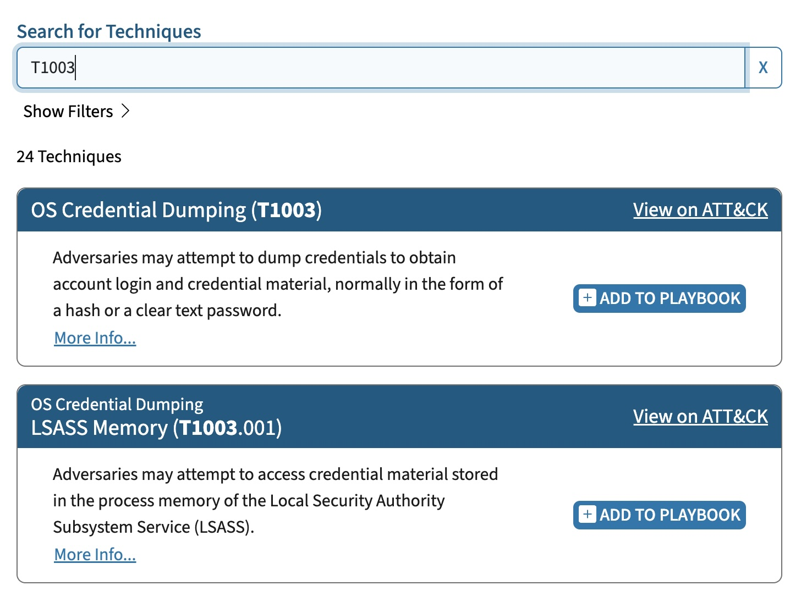
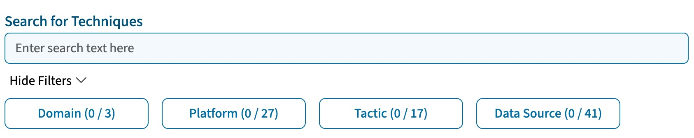
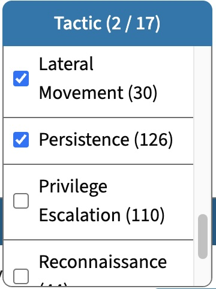
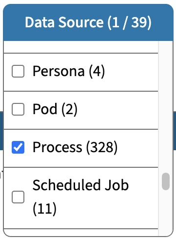
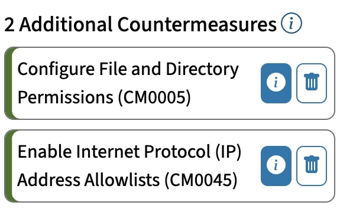
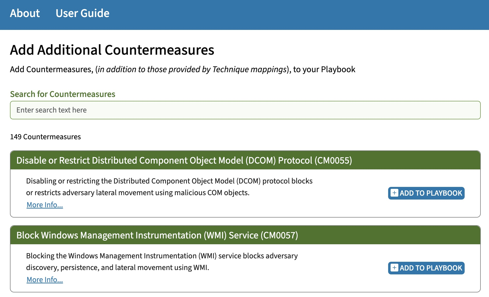
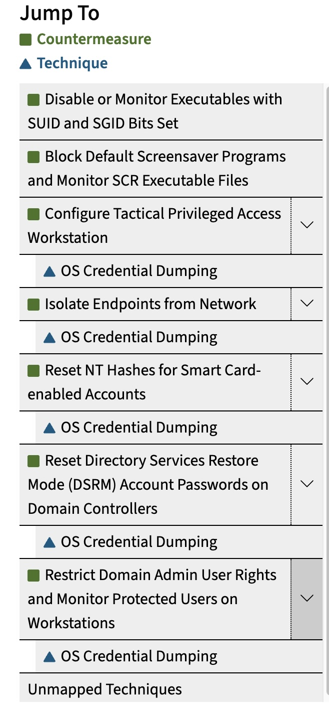
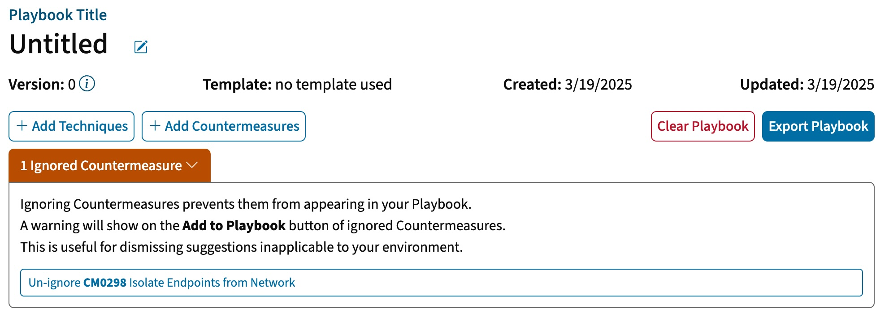

3.1 Adding ATT&CK Techniques to a Playbook
The Add Techniques page allows users to browse and add ATT&CK
techniques to their Playbook.

Figure
8: Add Techniques Page
Playbook-NG incorporates the full set of Techniques and
Sub-Techniques from the latest ATT&CK Enterprise release, any of
which may be included in a Playbook. Future releases of Playbook-NG may
include Techniques and Sub-techniques from other ATT&CK domains (for
example, Mobile or ICS) if Countermeasures mapped to these domains are
available.
To help minimize the size of the Add ATT&CK Techniques page,
Playbook-NG presents ATT&CK Techniques as “cards” with just the
first line of description text. To view the full details of a Technique,
including the description, associated Tactics, and references, click on
the More Info link below the description text (see
Figure 8, above) on the card. This will bring up an
info box that contains the full set of information.

Figure
9: Expanded Technique Info Box (example)
Both the Technique card and the Technique info box include a
View on ATT&CK link (see Figures 8 and
9, above) in the top-right corner that navigates to the
corresponding Technique page on the official ATT&CK website.
Adding a Technique to a Playbook is simple - use the +Add To
Playbook button (see Figures 8 and 9, above).
To add a Sub-Technique, add it directly using the same method, or select
it inside of the parent Technique’s info box and then similarly use
+Add To Playbook in the top right corner.
Any Techniques or Sub-Techniques that are added will immediately show
up in the Playbook Cart to the right of the Techniques
List (see Figure 10, below). For more information on
the cart and how to use it, refer to Section 3.1.4: Cart
Overview below.

Figure
10: Playbook Cart (Example)
3.1.1 Searching for Techniques
The primary way of finding Techniques to add to a Playbook is through
the search bar (see Figure 11, below). The search bar
allows searching by an ATT&CK Technique’s ID/Name (if known), as
well as any key words that may be associated with a Technique (e.g.,
“UAC”). The returned search results will include any ATT&CK
Techniques, including Sub-Techniques, which matched the search
query.

Figure
11: Technique Search Interface (Example)

Figure
12: Returned ATT&CK Sub-techniques for T1003 (Example)
3.1.2 Technique Filters
Technique filters allow for refining the set of presented Techniques
to a smaller, more manageable set.
To use the filters, expose the filtering drop-down menu by clicking
on Show Filters > (directly below the text search
bar). Once exposed, the drop-down menu will reveal 4 types of
filters:
- Domain
- Platform
- Tactic
- Data Source

Figure
13: Technique Filters
Filters operate in the following manner with respect to returned
results:
- Checking multiple options within a single filter (e.g., Platforms)
is a union operation which returns more results.
- Using multiple filters (e.g., Platforms and Data Sources) is an
intersection operation on their combined matches and returns less
results.
Individual filters may be cleared-out by manually unchecking filter
selections. To clear all filter selections, click on the Clear
All Filters button above the filters. To close any of the
individual filter selections (e.g., Platforms), simply click outside of
the filter.
3.1.2.1 Filter Numbers
The top of each filter includes numbers next to its name, which
indicate:
- In the filter name dropdown buttons: The number of
filter options checked / The number of filter options available
- Next to each filter option: The number of results
matching this filter option
3.1.2.1.1 How Filter Numbers Update
Checked filter options are cleared whenever the search text changes.
Filter options that match no search results are removed.
The checking/unchecking of options within a filter column will cause
the other filter columns to update. Multiple filters represent an
intersection and therefore filter each other.
For Example: Checking only the “Mobile” Domain
filter option will limit available Platform options to “Android” and
“iOS”.
3.1.2.2 ATT&CK Domain Filter
The ATT&CK Domain Filter is not pictured and is the simplest of
the filters available. It allows selecting which ATT&CK Domains (of
those loaded into the application) that Techniques should be shown
for.
3.1.2.4 Tactics Filter
The Tactics filter (see Figure 15, below) displays
the set of ATT&CK Tactics that Techniques are mapped to. In
ATT&CK, Tactics represent the “why” of an ATT&CK Technique or
Sub-Technique and the adversary’s tactical goal (the reason for
performing an action). Some Techniques can be used to achieve multiple
goals, and therefore are mapped to multiple Tactics.
Users can make use of the Tactics filter to select the set of Tactics
that are relevant to their Playbook. For example, if one is trying to
select Countermeasures only for Techniques that are trying to achieve
Persistence, the “Persistence” value in the Tactics filter can be
selected.

Figure
15: Tactics Filter (Example)
More
information on ATT&CK Tactics.
3.1.2.5 Data Sources Filter
The Data Sources filter (see Figure 16, below)
displays the set of ATT&CK data sources that Techniques are mapped
to. In ATT&CK, data sources refer to the types of data that may be
collected on a host or network to potentially detect an ATT&CK
Technique or Sub-Technique. Therefore, data sources are most relevant to
threat hunting and analytics.
For example, the “Process Creation” data source can be used to detect
T1569.002 System Services: Service Execution, by providing the data
around newly executed processes that call out to the Windows service
control manager. Therefore, users can filter Techniques by data sources
that may be available in their environment (e.g., those that are
collected by a tool) or are otherwise appropriate for their particular
use.
More information on
ATT&CK Data Sources.

Figure
16: Data Sources Filter (Example)
3.1.4 Cart Overview
The Playbook-NG cart functions much like a traditional e-commerce
shopping cart and provides a summary of the selected Playbook Techniques
and Countermeasures.
There are two ways to interact with cart items - clicking on the
information icon (“i”) will bring up an info box that
contains the full details of a particular Technique or Countermeasure;
the same can be achieved by clicking on More Info..
when viewing a Technique or Countermeasure. Similarly, clicking on the
trashcan icon (üóëÔ∏è) will delete an item from the cart.

Figure
20: Cart Overview
3.1.4.1 Baseline Countermeasures
By default, Playbook-NG includes several “baseline” Countermeasures
in each custom Playbook in the Additional Countermeasure section of the
cart (see Figure 21, below). Baseline Countermeasures
are those that are deemed to be useful in many scenarios; however, they
can be manually deleted by clicking on the trashcan icon (üóëÔ∏è) next to
each item.

Figure
21: Additional Baseline Countermeasures
3.2 Adding Countermeasures to a Playbook
The process of adding Countermeasures in Playbook-NG is largely
automated, since the Countermeasures that are applicable for a
particular ATT&CK Technique are automatically added once that
Technique has been added to a Playbook. For example, the following
Countermeasures are automatically added for T1003: OS Credential
Dumping.

Figure
22: Countermeasures Added for T1003
3.2.1 Additional Countermeasures
Playbook-NG also supports the manual addition of Countermeasures,
outside of those mapped to ATT&CK Techniques. The Additional
Countermeasures page which supports the manual addition of
Countermeasures can be accessed by clicking on the >
Countermeasures button on the top right corner of the cart
while on the Techniques page. Besides adding individual Countermeasures,
the Countermeasures page also allows users to explore the set of
Countermeasures that are available in Playbook-NG.

Figure
23: Add Additional Countermeasures Page
The interface for the Countermeasures page is very similar to that
used for the Techniques page - the one difference is that there are no
individual filters for Countermeasures, with the free-text search bar
being the only search interface. Therefore, any free-form text can be
used to find any additional Countermeasures. Any matching text for the
free-text search is displayed in the Matches: section
found at the bottom of each Countermeasure (see Figure
24, below).

Figure
24: Countermeasure Search with Results (Example)
To view the full text of a Countermeasure, click on the More
Info… button in the bottom left corner of each displayed
Countermeasure, which will bring up an info box with the information.
Once in the cart, clicking on the i icon next to each
respective Countermeasure will bring up the same info box.
After adding any additional Countermeasures, the remaining steps in
building a Playbook with Playbook-NG are reviewing and exporting.
3.3 Reviewing Added Techniques and Countermeasures
The Playbook Review Page provides an overview of the Techniques and
Countermeasures that have been added to the Playbook.

Figure
25: Example Review Page
Users can browse the contents of the Playbook using the left-hand
navigation menu, which provides a summary of the Countermeasures and
Techniques in the Playbook. Countermeasures can be expanded by clicking
on the right-hand arrow > to see the list of
Techniques that they apply to (see Figure 26,
below).

Figure
26: Review Page - Navigation Menu (Expanded Countermeasures)
COUN7ER Countermeasures including mappings to the Techniques that
they mitigate. As such, Playbook entries can be viewed in two different
ways on the review page:
- Group by Countermeasures (default):
mitigated Techniques appear under each Countermeasure. Techniques can be
displayed multiple times in this view - once per each Countermeasure
that is mapped to the Technique.
- Group by Techniques: corresponding Countermeasures
appear under each Technique. Countermeasures can be displayed multiple
times in this view - once per each Technique that is mapped to the
Countermeasure.
To switch between views, use the Group by Techniques
toggle (see Figure 27, below) which is found above the
listing of Countermeasures and Techniques.
Figure
27: Review Page - Grouping Toggle
Figure 28, below, shows an example of how the two views look with the
same Playbook content (grouped by Countermeasures at the top, and by
Techniques at the bottom):

Figure
28: Review Page - Grouping Comparison
In addition, the review page includes a search bar that allows
searching through entries by keywords such as Countermeasure name or
Technique ID. Similarly, there is a platform filter (Figure
29, below) which allows for filtering by Windows, macOS, and
Linux so that only the Countermeasures applicable to the selected
operating system(s) are displayed.

Figure
29: Review Page - Platforms Filter
3.3.1 Deleting Techniques
In the Group by Techniques view, Techniques can be
deleted from the Playbook (see Figure 30, below).
Deleting a Technique removes it and its mapped Countermeasures from the
Playbook.

Figure
30: Review Page - Delete Techniques
3.3.2 Ignoring Countermeasures
In the default Group by Countermeasures view,
Countermeasures can be ignored by using the Ignore
button (see Figure 25, above). Ignoring a
Countermeasure will remove it from every Technique it is mapped under,
remove it from Additional Countermeasures, and prevent it from being
added as a mapping when adding new Techniques. This also prevents it
being added during updates to an imported Playbook. Ignoring certain
Countermeasures can be useful to ensure that the ones included in a
Playbook are applicable to your environment.
The Ignored Countermeasure(s) button at the top of
the review page (Figure 31, below) can be used to view
and revert previously-ignored Countermeasures.

Figure
31: Review Page - Ignore Countermeasures
3.3.3 Deleting Additional Countermeasures
In the Group by Techniques view, Additional
Countermeasures can be deleted from the Playbook (see Figure
32, below). This only affects the Additional Countermeasures
section itself, as Techniques will keep their mapped
Countermeasures.

Figure
32: Review Page - Delete Additional Countermeasures